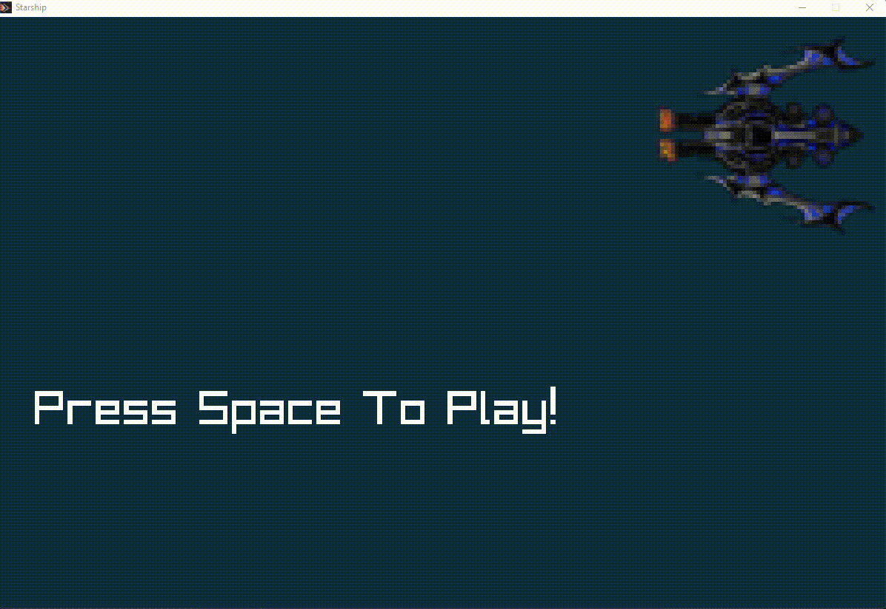

DFS I
Project Overview
DFS I was my first end-to-end solo game project. Working entirely on my own, I took the game from an initial concept through prototyping, programming, and polish to a complete, playable build — owning every part of the process along the way.

Main Gameplay Screen
The core gameplay view, showing the main mechanics and the on-screen elements players interact with during a session.

Gameplay in Action
A short capture of the game in motion, showing the core loop and how the systems come together in real time.
Development Purpose
The goal was to build a complete, self-contained game by myself and strengthen my core development fundamentals. Owning the whole project pushed me to scope realistically, make design decisions, and solve problems without a team to fall back on.
Development Process
I began with a minimal prototype to prove out the core mechanic, then iterated on gameplay, level design, and feel through repeated playtesting. Each pass refined the systems, fixed bugs, and tightened the moment-to-moment experience until it felt cohesive.
Outcome & Achievements
The result is a complete, playable game that demonstrates my ability to carry a project from concept to finished build on my own. It set the development habits and problem-solving approach I carried into my later solo and team projects.